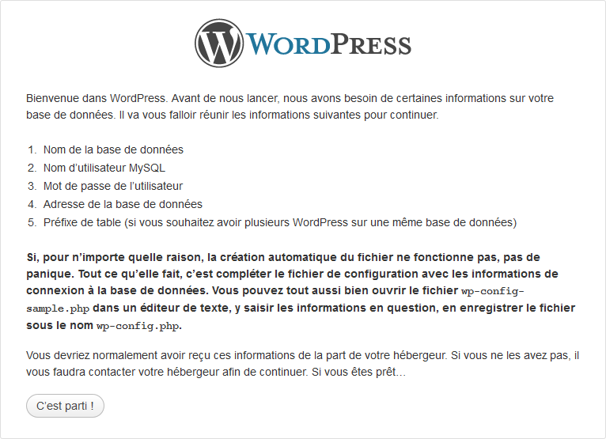
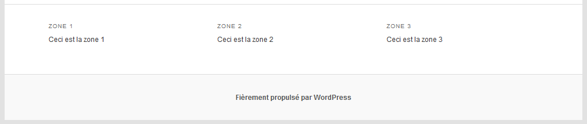
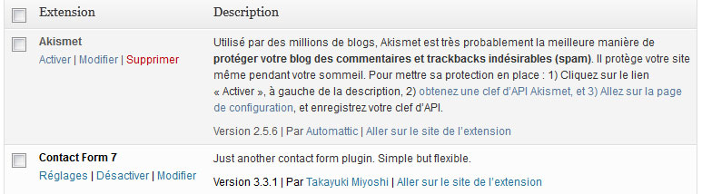

Vous souhaitez mettre en place un site utilisant Wordpress ? Vous êtes un simple utilisateur et souhaitez comprendre le fonctionnement de Wordpress ?
Alors, ce cours est fait pour vous ! Nous allons commencer par découvrir comment installer Wordpress et l'utiliser. Pour les plus aventureux d'entre vous, nous continuerons en abordant la création de thèmes ainsi que la création de plugins.
La première partie ne nécessite pas de connaissances particulières et peut être lue par quiconque souhaite simplement utiliser Wordpress. En revanche, pour la création de thèmes et de plugins, la connaissance du HTML, de CSS et de PHP est nécessaire.
Dans ce premier chapitre, nous allons découvrir ce qu'est WordPress et pourquoi le choisir lui, avant de voir comment l'installer, que ce soit manuellement sur votre hébergement ou via votre hébergeur.
Wordpress est généralement défini comme étant un moteur de blog, c'est-à-dire un système permettant de gérer et d'administrer un blog. Mais en réalité, Wordpress est un vrai CMS. CMS signifie Content Management System, ou Système de Gestion de Contenu : il s'agit d'un système permettant de gérer et d'administrer du contenu. Dans le cas de Wordpress, il est question de rédiger des articles (blog) et de créer des pages, ce qui permet de mettre en place très facilement un site Web acceptable !
Wordpress est développé en PHP, nécessite une base de données MySQL et est distribué sous licence libre GNU GPL. Le fait que ce soit développé en PHP permet d'installer le système sur la quasi-totalité des hébergements gratuits et payants.
Petit historique
Wordpress est un fork (une copie) du système de blog b2. Le créateur de b2, Michel Valdrighi, s'est distancé un temps de son projet, et celui-ci fut repris par Matthew Mullenweg, en 2003. En 2005, ce dernier créa la start-up Automattic qui s'occupe de distribuer et de développer le système, ainsi que d'autres systèmes et services annexes comme Gravatar ou Polldaddy parmi les plus connus.
Depuis 2003, Wordpress a énormément évolué, pour en arriver à la version 3 et devenir le CMS le plus utilisé dans le monde. Le CMS a été récompensé à deux reprises du prix du meilleur CMS open-source (en 2007 et 2009) ! Au fil du temps, le système s'est doté d'atouts non négligeables :
une interface d'administration particulièrement intuitive
de très nombreux plugins
de très nombreux thèmes
une création de thèmes aisée, ainsi qu'un grand niveau de personnalisation de l'interface
la possibilité de définir un thème particulier pour une page
une très grande communauté, ce qui facilite la recherche d'aide
la possibilité d'autoriser plusieurs rédacteurs et contributeurs
Quelques points noirs peuvent toutefois rebuter :
beaucoup de fonctionnalités, ce qui surcharge parfois l'interface d'administration de prime abord
la nécessité de posséder un hébergement avec PHP et une base de données MySQL
bien que les origines de Wordpress, b2, soient françaises, Wordpress est un système anglophone, mais la communauté francophone est relativement active
Pourquoi choisir Wordpress ?
Wordpress n'est pas le seul CMS qui existe, c'est un parmi d'autres. Alors pourquoi lui ?
Tout simplement parce que Wordpress est suffisamment intuitif pour être utilisé par des néophytes, et suffisamment personnalisable pour être utilisé par les utilisateurs les plus aguerris. Ça en fait donc un système de gestion de contenu extrêmement polyvalent, utilisable du simple blog personnel à une petite boutique de vente en ligne.
Bien évidemment, Wordpress n'est pas toujours la solution la mieux adaptée : vous devez choisir votre CMS suivant vos besoins. Par exemple, si vous souhaitez mettre en place un site collaboratif comme Wikipedia, il vaut mieux vous tourner vers un CMS de type « wiki », comme MediaWiki (le CMS utilisé par Wikipedia). Wordpress possède un plugin appelé bbPress qui permet d'installer un forum de discussion. Ce plugin fonctionne bien, mais n'est clairement pas aussi abouti qu'un CMS de gestion de forum comme phpBB, CMS Made Simple ou Simple Machines.
Bref, suivant le type de site que vous souhaitez mettre en place, Wordpress n'est peut-être pas toujours la meilleure solution. Mais, dans le cas d'un forum par exemple, il est tout à fait possible d'installer Wordpress pour gérer le site statique et les actualités, et d'installer un forum comme phpBB séparément. C'est possible et même assez courant.
Wordpress est aussi fréquemment utilisé par les sociétés de création de sites Web : ces sociétés utilisent souvent des CMS pour que leurs clients puissent gérer eux-mêmes leur site Web, et c'est fréquemment Wordpress qui est utilisé. C'est rapide à installer, l'utilisation est intuitive et surtout, le design est facile à adapter.
Il y a deux façons principales d'installer Wordpress :
via un module, si votre hébergeur les supporte
vous-même, en téléchargeant un fichier ZIP et en plaçant son contenu sur votre hébergement
Nous allons dans un premier temps installer Wordpress via un module avant de voir comment le faire manuellement.
Installer Wordpress via un module
Certains gros hébergeurs, par exemple OVH, proposent l'installation de modules. En fait, le terme module fait référence à des CMS tels que Wordpress, MediaWiki, Magento (pour du e-commerce), phpBB... Ces modules diffèrent suivant l'hébergeur. Mais si votre hébergeur gère les modules, il est quasi certain que Wordpress en fait partie.
Pour installer le module Wordpress, connectez-vous à l'interface d'administration de votre hébergeur, et cherchez une rubrique appelée Modules. C'est par le biais de cette rubrique que vous allez pouvoir installer Wordpress en quelques clics.
L'installation via un module permet de s'affranchir du téléchargement et de l'envoi des fichiers, ainsi que de la configuration. Tout est géré par l'hébergeur. Chez la plupart des hébergeurs, vous recevez un mail contenant le mot de passe du compte « admin » créé automatiquement lors de l'installation. Une fois cet email reçu, il ne vous reste plus qu'à vous connecter en vous rendant sur www.votre-hebergement.com/wp-admin/ :
Pour envoyer les fichiers de Wordpress sur votre hébergement, il vous faut un logiciel de transfert FTP. Si vous n'en possédez pas, vous pouvez télécharger FileZilla, un logiciel libre et gratuit. Si vous avez l'habitude d'utiliser un autre logiciel FTP, utilisez-le, mais la procédure sera décrite ici en utilisant FileZilla.
Dès que vous aurez installé FileZilla, nous pourrons commencer !
Dézippez les fichiers de Wordpress dans un dossier sur votre disque dur.
Choisissez un répertoire facile d'accès. Moi, je vais placer ça dans C:\WordPres. Une fois que c'est fait, ouvrez FileZilla et munissez-vous des informations de connexion FTP fournies par votre hébergeur :
l'hôte FTP (on dit aussi adresse FTP) : il s'agit d'une adresse ressemblant à l'adresse d'un site Web. Par exemple, pour un hébergement chez Free, l'hôte est ftpperso.free.fr. Il y a souvent le mot « ftp » dedans ;
votre identifiant ;
votre mot de passe.
Dans FileZilla, renseignez ces trois choses dans la barre d'outils comportant les champs Hôte, Identifiant et Mot de passe, puis cliquez sur Connexion rapide. FileZilla va alors tenter d'établir une connexion avec le serveur FTP de votre hébergement ; si vous voyez des lignes de texte affichées en vert, c'est bon, tout fonctionne ! En revanche, si c'est rouge, c'est qu'il y a des soucis. Dans ce cas, lisez les messages d'erreur pour voir ce qui cloche. Il peut s'agir d'un mauvais mot de passe, d'un mauvais identifiant ou d'un hôte introuvable. Voici ce que j'obtiens :
L'interface de FileZilla est divisée en deux sur la hauteur : la partie gauche contient les dossiers et les fichiers présents sur vos disques durs. C'est une sorte d'explorateur. La partie droite quant à elle contient les dossiers et les fichiers présents sur votre hébergement.
Pour placer des fichiers sur votre hébergement, il suffit de les déplacer de la fenêtre de gauche vers la fenêtre de droite, en prenant soin d'être dans le bon dossier ! La rapidité de transfert dépend de la vitesse de connexion en envoi (le contraire du téléchargement). Généralement cette vitesse est plus faible que la vitesse de téléchargement Voici ce que vous devriez obtenir après placement :
Connexion à la base de données
Dès que les fichiers de Wordpress sont sur votre hébergement, il faut « installer WordPress », c'est-à-dire créer les tables dans la base de données, configurer sommairement le CMS et créer un compte d'administrateur. Tout cela se fait très simplement et rapidement en vous rendant sur la page : www.votre-hebergement.com/wp-admin/install.php :

Cliquez sur « C'est parti ! ».
La première étape consiste à entrer les informations de connexion à la base de données. La base de données est l'endroit où Wordpress va stocker des tables de données. Chaque table servira à stocker des informations comme la liste des articles, la liste des pages, des commentaires, des utilisateurs... Bref, c'est dans la base de données que seront enregistrées toutes les informations nécessaires au fonctionnement de Wordpress.
Et voilà, Wordpress a créé les tables, et il ne reste plus qu'à configurer le compte administrateur.
Le compte administrateur
Le compte administrateur est un compte créé automatiquement et qui possède les « pleins pouvoirs » pour administrer le CMS. Par défaut, il se nomme « admin » mais vous pouvez donner un autre nom. Notez que les caractères spéciaux et accentués ne sont pas autorisés :
La dernière case « Vie privée » est à décocher si vous souhaitez garder votre blog secret (il est possible de la cocher ou de la décocher par la suite).
Fin
Si tout se passe bien, vous obtenez un message de succès vous invitant à vous connecter à votre site !
Nous allons pouvoir rentrer dans le vif du sujet : la découverte de l'interface d'administration de Wordpress !
Ce second chapitre va nous permettre de faire le tour du propriétaire et de découvrir l'interface d'administration de Wordpress. Cette interface est bien pensée, mais se révèle parfois un peu surchargée ; mais tout est prévu puisqu'il est possible de n'afficher que ce dont on a besoin.
Toute l'administration de Wordpress se fait via une adresse : www.votre-hebergement.com/wp-admin/.
Dès que vous vous connectez à l'administration, vous atterrissez sur ce que l'on nomme le « tableau de bord », aussi appelé « dashboard » en anglais. Ce tableau de bord constitue l'accueil de l'administration et permet d'avoir une vue d'ensemble sur ce qui se passe : les derniers commentaires postés, les derniers articles, les mises à jour, d'éventuelles statistiques.
Lors de votre première connexion au tableau de bord, un message vous souhaite la bienvenue. Vous pouvez le fermer en cliquant sur le lien « Fermer », car ce message ne nous sera d'aucune utilité et occupe de l'espace pour rien. Une fois ce message masqué, voici ce que vous voyez :
Administration en 3 parties
L'administration est divisée en 3 grandes parties :
Sur le dessus, une barre horizontale qui comprend quelques liens rapides. Cette barre sera également affichée sur les pages de votre site si vous êtes connecté. Celle-ci vous permettra d'accéder soit au site, soit à l'administration, d'accéder à vos données personnelles, aux commentaires, et à la rédaction d'articles, de pages... en cliquant sur « Nouveau ».
Sur la gauche, le menu principal pour naviguer au sein de l'administration. Ici, vous êtes sur le tableau de bord, c'est-à-dire l'accueil de l'administration. Pour gagner de la place, vous pouvez réduire ce menu en cliquant sur le dernier lien « Réduire le menu ». La plupart des menus possèdent un sous-menu qui s'affiche lors du survol, mais si vous cliquez sur le menu, c'est la page associée au premier sous-menu qui s'affichera.
Et enfin, au centre, se trouve la partie principale, dans laquelle s'affichent les pages de l'administration.
Options de l'écran
En haut à droite se trouve un lien « Options de l'écran ». Ce lien sera présent sur la quasi-totalité des pages de l'administration et vous permet de déterminer quels blocs d'informations afficher, de manière à alléger l'interface. Il vous est aussi loisible de déterminer le nombre de colonnes (le nombre varie en fonction de votre largeur d'écran) dont est constituée l'interface :
Pour pouvoir utiliser Wordpress correctement, il convient d'effectuer quelques réglages. Pour ce faire, allez dans le menu « Réglages » et cliquez sur le premier sous-menu « Général ».
Réglages généraux
Les réglages généraux sont pour la plupart assez basiques. Les premiers réglages concernant le titre et le slogan du site. Le slogan est un simple texte affiché après le titre du site, mais ça dépend surtout du thème graphique que vous allez utiliser.
Le réglage « Adresse web du site » est un peu particulier. Généralement, on installe Wordpress à l'endroit où l'on veut qu'il soit accessible. Si on l'installe à la racine de l'hébergement, il sera accessible à cet endroit, c'est-à-dire via l'URL www.votre-hebergement.com/ . Mais Wordpress crée beaucoup de fichiers qui pourraient venir polluer la racine. Dès lors, il est possible d'installer WordPress dans un sous-dossier et de définir, via le réglage « Adresse web du site », l'URL d'accès à de Wordpress comme s'il était installé à la racine. Donc si Wordpress est installé dans www.votre-hebergement.com/wp/ (il s'agit du réglage « Adresse web de WordPress ») et que vous indiquez www.votre-hebergement.com/, Wordpress sera accessible à cette dernière adresse.
Ensuite, on trouve deux réglages liés aux inscriptions. Par défaut, les visiteurs ne sont pas autorisés à s'inscrire. Si votre site est juste un blog ou un site « vitrine », il n'y a aucune raison de permettre aux visiteurs de s'inscrire, car pour poster un commentaire il n'est pas nécessaire d'être inscrit. La gestion des commentaires sera abordée plus tard dans ce cours.
Si vous autorisez les visiteurs à s'enregistrer, il vous faudra définir quel rôle ils auront. De base, leur rôle est abonné, c'est-à-dire qu'ils n'ont aucun pouvoir. Nous verrons les différents rôles plus en détail dans la partie qui suit.
Et pour finir les réglages généraux, il ne reste plus qu'à s'occuper des réglages temporels, c'est-à-dire le format des dates, des heures, le fuseau horaire à utiliser.
Écriture
Ces options permettent "d'améliorer" votre travail de rédaction. Vous pouvez augmenter la hauteur de champ de texte qui permet de rédiger vos articles, décider si vous souhaitez afficher les smileys dès que vous en mettez un dans vos articles (comme :-P).
Quand vous aurez créé de nouvelles catégories, vous pourrez choisir la catégorie par défaut.
En fonction des thèmes graphiques, il peut y avoir des formats d'articles (donc des présentations d'articles différentes en fonction de chacun des formats) et vous pouvez choisir le format par défaut.
Les autres options sont faites pour publier des articles à distance (par email par exemple), je ne détaillerai pas ici, mais si vous souhaitez mettre ça en place il vous suffit de lire les détails de ces options.
Lecture
Par défaut, sur la page d'accueil sont affichés les derniers articles (les dix derniers, vous pourrez changer cette valeur juste après) mais si vous souhaitez afficher une page statique il faut cocher la case « Une page statique » et fournir à Wordpress la page qui servira de page d'accueil et la page qui servira à afficher les articles (une page « Actualités » par exemple).
À l'installation de notre Wordpress vous avez coché, ou non, une case « Vie privée » qui permet (si elle est cochée) d'indexer votre site sur le moteur de recherche. Avec l'option « Visibilité pour les moteurs de recherche » nous pouvons changer la valeur que l'on a renseignée à l'installation.
Le reste des options sont pour l'affichage et normalement, nous n'aurons pas besoin d'y toucher.
Permaliens
Chaque article publié est accessible via une URL, que les utilisateurs de Wordpress appellent un permalien (mot créé sur base des mots lien et permanent). Par défaut, les permaliens sont au format www.votre-hebergement.com/?p=123, et si votre hébergement supporte l'URL Rewriting (la plupart, à l'exception de Free), il est conseillé de changer ce format pour quelque chose de plus compréhensible :
Par exemple, le format www.votre-hebergement.com/2012/08/08/exemple-article/ est intéressant, car il fait apparaître dans le permalien la date de publication ainsi que le titre de l'article, ce qui améliorera grandement le travail des moteurs de recherche que sont Google et Bing.
Vous avez aussi la possibilité de spécifier un préfixe pour les catégories et les mots-clefs si vous avez spécifié un format différent de permaliens. Les permaliens servant à accéder aux catégories et aux mots-clefs sont, par défaut, de cette forme :
En spécifiant le préfixe categorie pour les catégories, votre permalien sera francisé : www.votre-hebergement.com/categorie/nom-de-la-categorie/. Il en va de même pour les mots-clefs.
Dans le cas d'un blog, il arrive parfois que vous soyez plusieurs à écrire des articles et si vous souhaitez qu'un utilisateur ait seulement le droit d'écrire des articles et rien d'autre, Wordpress a mis en place un système d'utilisateurs (et de droits) simple et complet.
Tout se passe dans le menu « Utilisateurs » où vous pouvez lister tous les utilisateurs existants (il ne devrait y avoir que votre compte), ajouter un nouvel utilisateur et modifier votre profil.
Ajout d'un utilisateur
Nous allons nous rendre dans le sous-menu « Ajouter » pour créer un nouvel utilisateur.
L'ajout d'un profil est simple, vous devez au minimum remplir l'identifiant (c'est celui qui sera utilisé pour se connecter à l'administration de Wordpress), l'email, le mot de passe et le rôle. Vous pouvez renseigner le nom et le prénom de l'utilisateur, son site web. En fonction du thème graphique, ces informations peuvent être utilisées lors de l'affichage des articles. Enfin, vous pouvez choisir d'envoyer le mot de passe par email à votre nouvel utilisateur.
Les rôles
Comme je vous l'ai dit juste au-dessus, Wordpress dispose d'un système de droits et celui-ci est représenté par les rôles utilisateurs :
Abonné
Contributeur
Auteur
Éditeur
Administrateur
Chaque utilisateur possède un nombre de droits qui lui permettent de réaliser telle ou telle action. Je ne vous détaillerai pas les différents droits, car il y en a plus de 50 différents, mais ils sont disponibles sur la documentation de Wordpress. Je vais tout de même vous faire un rapide résumé de chacun des rôles :
Abonné : c'est le rôle le plus faible, il a seulement le droit d'accéder au tableau de bord et à l'édition de son propre profil.
Contributeur : mêmes droits qu'un abonné, mais il peut en plus modifier ou supprimer les articles dont il a été désigné comme auteur.
Auteur : mêmes droits qu'un contributeur et il peut également ajouter des médias (on en parlera plus loin dans le cours), mettre en ligne (publier) de nouveaux articles et mettre hors-ligne (dé-publier) ses articles.
Éditeur : mêmes droits que l'auteur et il peut également gérer les articles des autres, les pages, les catégories d'articles et les commentaires. En somme, il peut gérer tout le contenu de votre blog.
Administrateur : il a simplement tous les droits. C'est le rôle qui est attribué à votre compte.
Modification d'un utilisateur
Depuis le sous-menu « Tous les utilisateurs », il est possible de modifier n'importe quel utilisateur. Cette page de modification permet de renseigner plus d'informations sur l'utilisateur qu'au moment de la création du compte comme la désactivation de l'éditeur visuel (il vaut mieux laisser cette case décochée), l'activation des raccourcis clavier, la couleur de l'interface d'administration...
Selon le thème graphique que vous choisissez, vous avez la possibilité de modifier les widgets présents dans la ou les sidebars.
Une sidebar est une zone, généralement verticale, qui peut être personnalisée en y ajoutant des widgets. Quant aux widgets, ce sont de petites applications avec des tâches déterminées. On trouve par exemple un widget qui affiche la liste des derniers articles, un autre qui affiche un nuage de mots-clefs, un autre qui affiche un champ de recherche, un calendrier... Bref, il y a un certain nombre de widgets de base. Si vous installez des plugins (nous en verrons par la suite), certains disposent d'un widget que vous devrez placer dans une des sidebars.
La gestion des widgets se fait via la page « Widgets » qui se trouve dans le menu « Apparence ». Cette page est divisée en deux, avec à gauche tous les widgets disponibles, et à droite la configuration de ou des sidebars, ainsi que les zones de pied de page. Ces zones de pied de page sont peu fréquentes dans les thèmes que vous trouverez sur internet, mais sont disponibles dans le thème de base fourni avec Wordpress. Il s'agit de trois zones, organisées en colonnes, et placées dans le bas de la page, comme ceci :

Pour ajouter un widget dans une sidebar, il suffit de le glisser de la zone à gauche vers la zone à droite dans la sidebar souhaitée et de configurer les options disponibles pour chaque widget (en général, cela se limite au titre du widget).
Wordpress met à votre disposition deux types de contenus : les articles et les pages. Même si, au premier abord, les deux se ressemblent, il existe des différences qu'il est important de bien comprendre avant de pouvoir en rédiger.
L’ordonnancement chronologique
Le point le plus important qui souligne la différence entre articles et page c'est l'ordonnancement chronologique. Si l'on veut faire un rapprochement avec un blog, les articles correspondent aux billets de votre blog, en général on les retrouve directement sur la page d'accueil alors que les pages sont accessibles depuis le menu de votre blog. Ils sont donc triés par ordre décroissant de publication (ou de mise en ligne de l'article), ils ont donc un classement chronologique. Les pages, elles, sont indépendantes les unes des autres et il n'y a aucun classement chronologique entre elles (il existe cependant un autre classement que l'on abordera plus loin).
Catégories et Mots-clefs
Les « Catégories » et les « Mots-clefs » (ou Tags) sont deux éléments propres aux articles qui permettent de classifier ces derniers autour de mêmes thèmes.
La rédaction
On va donc commencer par créer notre article, pour ça dans le menu, on survole l'entrée « Articles » ce qui laisse apparaître un sous-menu et l'on clique sur « Ajouter ».
Menu Articles survolé
Une fois que vous avez choisi d'ajouter votre article, on arrive sur une nouvelle page qui vous permet d'ajouter un nouvel article.
Interface d'ajout d'article
La partie rédaction se compose de deux parties : le titre (le champ où il est marqué par défaut « Saisissez le titre ici ») et le contenu (la grande zone de texte situé en dessous du titre). La première étape consiste donc à choisir un titre. D'un point de vue référencement, il faut bien le choisir, car si vous avez bien suivi la partie sur les réglages de votre Wordpress, en particulier la partie sur les permaliens, c'est le titre de votre article qui fera l'URL de votre article. On va renseigner notre premier titre (on pourra mettre par exemple : Bienvenue sur mon super blog). Une fois le titre renseigné, on passe à la rédaction du contenu et pour ça Wordpress met à notre disposition un éditeur WYSIWYG qui permet de mettre rapidement en forme votre texte (du gras, de l'italique...). On ne détaillera pas toutes les possibilités, car pour certaines (comme le bouton gras
) vous avez l'habitude de les rencontrer dans des logiciels comme Word, OpenOffice ou même lorsque vous rédigez un message sur le Site du Zéro, cependant nous allons vous présenter ceux qui sont spécifiques à Wordpress :
Rajoute un bloc citation (correspond à la balise <blockquote> en HTML)
Permet de faire/modifier un lien
Permet de défaire (supprimer) un lien
Permet de faire un chapeau à son article avec un lien « Lire la suite »
Présente la page en plein écran (enlève tout ce qui est autour des champs nécessaires à la rédaction)
Rajoute de nouvelles fonctionnalités à l'éditeur
En fonction de la version de Wordpress que vous avez, vous pouvez cliquer sur le dernier bouton présenté afin de rajouter de nouvelles fonctionnalités, une deuxième ligne de boutons apparaît. Comme pour la 1re ligne, on ne détaillera pas tous les éléments, mais seulement ceux propres à Wordpress :
Cette liste permet d'appliquer des styles au texte, notamment des titres.
Permet de coller un texte en supprimer sa mise en page (couleur, gras...)
Permet de coller un texte provenant de Word en gardant sa mise en page.
Efface les styles (gras, couleur...) du texte sélectionné
Permet d'ajouter des caractères spéciaux non présents sur votre clavier (?, =, Œ...)
Ajoute une tabulation à l'élément (paragraphe, liste à puce, titre...)
Supprime une tabulation
Ajouter un lien
On va maintenant voir comment ajouter un lien, soit vers un autre site, soit vers un des contenus de notre blog. On a vu juste avant qu'il existe deux boutons pour les liens : un pour faire (ou modifier) un lien
, un pour supprimer un lien
. Par défaut, ces deux boutons sont désactivés, pour les activer, il faut sélectionner le texte qui sera affiché. Quand vous cliquez sur le bouton permettant de faire un lien, une petite fenêtre s'ouvre.
Fenêtre d'insertion de lien
Il y a trois informations à renseigner :
L'adresse web du lien (http://...)
Le titre du lien (titre alternatif, en HTML, cela permet de renseigner l'attribut title)
Une case à cocher permettant d'ouvrir un nouvel onglet ou une nouvelle fenêtre (en fonction des paramètres du navigateur de votre visiteur) si elle est cochée
Pour faire un lien vers un contenu du site (article, page...) Wordpress a mis en place une petite fonctionnalité bien pratique. Toujours sur la fenêtre d'insertion, il y a un lien « Ou alors, faites un lien vers l’un des contenus de votre site » sur lequel il faut cliquer (on peut le voir sur l'image juste au-dessus). Cela déroule la liste du contenu de votre blog, il suffit de rechercher ce qui vous intéresse (un petit champ permet de faciliter la recherche), quand vous avez trouvé le contenu qui vous intéresse cliquez dessus et Wordpress remplira les champs « Adresse Web » et « Titre » pour vous.
Vous pouvez maintenant ajouter votre lien grâce au bouton prévu à cet effet.
Pour modifier le lien, vous devez sélectionner le lien et ensuite on reclique sur le lien qui nous a servi à insérer un lien.
Pour la suppression du lien, vous devez le sélectionner et cliquer sur le bouton correspondant (
).
À vous de faire quelques tests pour voir comment réagit Wordpress.
Les permaliens (ou permalinks)
On en a parlé un peu au début de ce chapitre, le permalien c'est la partie de l'adresse d'un article qui se trouve après l'adresse de votre site. Si un article a pour adresse : http://www.monsite.com/bienvenue-sur-mon-super-blog/ le permalien sera bienvenue-sur-mon-super-blog. Sa formation dépendra de ce que vous avez choisi dans les réglages des permaliens au chapitre précédent (on se basera ici sur « Nom de l’article ») et du titre de l'article. Après avoir écrit votre titre et lorsque vous changez de champs Wordpress laisse apparaître le permalien sous le titre.
Aperçu du permalink de l'article Bienvenue sur mon super blog
Comme vous pouvez le voir, il est possible de le modifier en cliquant sur le correspondant ou d'obtenir le lien court (le lien par défaut sous la forme http://www.monsite.com/?p=identifiant-de-l-article).
J'ai un problème, le permalien de mon article est bienvenue-sur-mon-super-blog2 et impossible de supprimer le 2 en modifiant le permalien, pourquoi ?
Quand vous rencontrez ce problème, c'est que vous avez un article ou une page ayant strictement le même permalien. La solution est donc de changer totalement le permalien pour en avoir un unique ou de supprimer l'élément perturbateur.
Les permalinks et la corbeille
Lorsque vous supprimez un article, il n'est pas supprimé définitivement et il conserve donc son permalien, il faut donc le supprimer définitivement de la corbeille.
Sur cette image, on peut voir qu'il y a deux moyens de supprimer un article, soit au moment du survol de l'élément concerné avec un lien « Mettre à la Corbeille » qui apparaît (en rouge), soit en cochant le/les éléments à gauche des titres et choisir dans la liste « Actions groupées » (en haut ou en bas de la liste) l'action « Déplacer dans la Corbeille ». Une fois supprimé, l'élément se trouve dans la Corbeille. On peut le voir sur cette image grâce à la notion « Corbeille (1) » (voir l'encadrée rouge). Pour supprimer définitivement l'élément, il faut aller dans la Corbeille, la présentation restant la même, seuls les termes changent, « Mettre à la Corbeille » devenant « Supprimer définitivement ».
Si vous suivez ça correctement, vous n'aurez pas de problème avec les permaliens.
Nous avons choisi notre titre, rempli le contenu de notre article et réglé notre permalien, on peut maintenant mettre en ligne (publier) notre contenu. Tout se passe en haut à droite dans le bloc « Publier ».
Bloc « Publier »
Ce bloc possède plusieurs options afin que vous puissiez publier contenu dans diverses conditions.
Enregistrer brouillon
Cette option semble évidente, elle permet d'enregistrer votre contenu sans faire aucune action de publication. Option très utile quand vous n'avez pas le temps de terminer votre contenu et que vous devez faire autre chose avant la fin de sa rédaction.
Aperçu
Ce bouton permet d'ouvrir une nouvelle fenêtre (ou un nouvel onglet) vous permettant d'avoir un rendu final du contenu comme s'il était en ligne et sans que quiconque ait accès à la page.
État
Cette option dépendra de la visibilité. Si la visibilité est à Privé, on ne pourra pas modifier l'état de l'article. Si la visibilité n'est pas à Privé on peut modifier l'état qui peut prendre trois valeurs : « Brouillon » (par défaut), « En attente de relecture » (pratique si vous souhaitez valider le contenu avant mise en ligne) et « Publié ».
Visibilité
Tout comme l'état, on a trois possibilités de visibilité : « Public (tout le monde peut voir) avec une une sous-option « Mettre cet article en avant sur la page d'accueil » (utile si votre thème prévoit l'utilisation de cette option), « Protégé par mot de passe » et « Privé » (seuls ceux ayant un compte sur votre blog pourront consulter l'article).
Publier (date)
Cette option permet de régler la date de publication de l'article. Par défaut, la valeur est à « Tout de suite », cela signifie que Wordpress mettra comme date (et heure) celle du jour de la publication (et non de la création). On l'a vu plus haut, les articles sont triés par ordre chronologique (décroissant) si vous souhaitez voir un article passer en seconde position il faudra lui mettre une date de publication antérieure au premier article. Si vous mettez une date postérieure à celle du moment où vous écrivez votre article, cela aura pour conséquence de transformer le bouton « Publier » en un bouton « Planifier ».
Article dont la date de publication est le 16 décembre 2121
Si vous cliquez sur ce bouton, l'article passera dans l'état « Planifié » (état non disponible dans ceux vus avant). L'article passera automatiquement dans l'état « Publié » à la date que vous aurez indiquée. Sur l'image ci-dessus, si l'on clique sur le bouton « Planifier », l'article sera publié le 16 décembre 2121.
Déplacer dans la Corbeille
Vous changez d'avis et ne voulez plus écrire cet article ? Vous pouvez envoyer en un simple clic votre article dans la corbeille. Il ne faudra pas oublier de le supprimer définitivement de la corbeille.
Publier/Mettre à jour
Tout simplement, cela permet de mettre en ligne pour la première fois un article ou bien de le mettre à jour.
Vous pouvez maintenant mettre en ligne votre premier article et vérifier qu'il se trouve bien sûr votre blog (si c'est le cas, un petit message dans un cadre jaune vous le fera savoir au-dessus du titre) !
Comme nous vous l'avons dit au début de ce chapitre, les « Catégories » et les « Mots-clefs » (ou Tags) sont deux éléments propres aux articles qui permettent de classifier ces derniers autour de mêmes thèmes. Les différences entre les catégories et les mots-clefs sont faibles. Les catégories sont obligatoires (Wordpress mettra par défaut votre article dans la catégorie « Non classé » si vous n'en choisissez pas une) et ils sont hiérarchisés (on parlera de catégories parentes et catégories enfants). On attribue en général peu de catégories à un même article (une ou deux catégories). Les mots-clefs, quant à eux, sont facultatifs, ne sont pas hiérarchisés et permettent de décrire plus précisément notre article, on pourra en utiliser plus que les catégories.
Pour bien comprendre la différence entre les deux, on va utiliser un exemple : vous écrivez un article sur l'Amphiprion ocellaris (si vous ne connaissez pas c'est encore mieux pour illustrer l'exemple). Cet article pourra être mis dans la catégorie « Poissons » (qui sera une catégorie enfant de la catégorie « Eau de mer ») et l'on pourra lui attribuer les mots-clefs suivants : récifal, Nemo, poisson-clown, anémone. Grâce à la catégorie et aux mots-clefs, vous aurez sûrement compris que l'on parlait du poisson-clown (article Wikipédia) que tout le monde connaît grâce au film d'animation Nemo.
Avant de voir comment les attribuer aux articles, on va voir comment les gérer. On l'a vu au tout début de ce chapitre que dans le menu « Articles » il y a deux sous-menu « Catégories » et « Mots-clefs » qui permettent de gérer... les catégories et les mots-clefs.
Les Catégories
On va se rendre dans le sous-menu « Catégories » pour voir comment tout cela se présente. L'interface est très simple, à gauche on peut ajouter une catégorie, à droite on a la liste des catégories existantes (on voit qu'il existe la fameuse catégorie « Non classé »).
Aperçu de la page « Catégories »
On va ajouter une nouvelle catégorie. Pour cela, il faut renseigner différents éléments :
Nom
C'est le titre de la catégorie, elle doit représenter les articles que vous allez lui affecter. Pour suivre l'exemple précédent, on peut mettre « Eau de mer »
Identifiant
Il doit être unique, il permet d'identifier la catégorie et de former les URLs permettant de consulter les articles d'une catégorie. Ici, en fonction des réglages des permaliens, le lien de notre catégorie sera http://www.monsite.com/category/eau-de-mer/, il faut donc bien le choisir, car il est important pour notre référencement. Wordpress vous aide à le choisir :
Citation
L’identifiant est la version normalisée du nom. Il ne contient généralement que des lettres minuscules non accentuées, des chiffres et des traits d’union.
Si vous ne savez pas quoi mettre, il suffit de laisser le champ vide, Wordpress le remplira à votre place (en suivant la règle citée ci-dessus). On peut remplir le nôtre avec la valeur « eau-de-mer ».
Parent
C'est la catégorie parente qui, comme on l'a expliqué, permet d'organiser et de hiérarchiser nos catégories. Cette liste déroulante s'enrichit des catégories existantes. Dans notre exemple, nous n'avons pas de catégorie parente donc on laisse la valeur par défaut « aucun ».
Description
Elle permet de décrire notre catégorie. La description peut-être utilisée par certains thèmes graphiques, c'est le cas du thème par défaut sur la page qui liste les articles de notre catégorie. On peut améliorer la présentation de la description grâce au HTML. Ici, vous pouvez mettre ce que bon vous semble.
Une fois tous ces champs correctement renseignés, vous pouvez cliquer sur le bouton « Ajouter une nouvelle catégorie ». Si tout se passe bien, on la retrouve dans la liste des catégories à droite !
Quand vous cliquez sur une catégorie à droite, cela vous laisse la possibilité de la modifier (changer le titre, l'identifiant...).
Maintenant, il nous reste à attribuer les catégories à nos articles. On va donc créer un nouvel article avec pour titre « Amphiprion ocellaris », pour le contenu vous êtes libre ! Pour attribuer une catégorie à un article (ou en créer une) c'est, dans la colonne de droite de l'interface, dans le bloc « Catégories ».
Bloc « Catégories »
Par défaut, on retrouve la liste de toutes les catégories disponibles. Pour attribuer une (ou plusieurs) catégorie à un article, il suffit de cocher la case qui correspond à la catégorie qui nous intéresse. En bas du bloc, on trouve un lien « + Ajouter une nouvelle catégorie » si vous cliquez dessus, vous pouvez ajouter à la volée une nouvelle catégorie. Deux champs apparaissent le premier pour le titre de la catégorie et le second pour définir la catégorie parente (si nécessaire). Pour notre article, on va ajouter une catégorie « Poissons » qui aura pour catégorie parente « Eau de mer ». Wordpress attribuera par défaut notre nouvelle catégorie.
Vous pouvez enregistrer votre article. Maintenant, on va voir comment lui attribuer des mots-clefs.
Les Mots-clefs
Pour les « Mots-clefs », l'interface est la même sans le « Parent » (les mots-clefs n'étant pas hiérarchisés), on vous laissera la découvrir par vous-même. Vous pouvez faire des tests en ajoutant les mots-clefs « Poissons » ou « Aquarium ».
Pour l'attribution des mots-clefs aux articles, c'est dans le bloc « Mots-clefs » (qui se trouve juste en dessous des catégories).
Bloc « Mots-clefs »
Soit vous choisissez les mots-clefs parmi les plus utilisés comme le propose le lien en bas du bloc (cette fonctionnalité n'est évidemment pas disponible pour votre premier article, car vous n'avez pas encore utilisé les mots-clefs), soit vous pouvez les ajouter depuis le champ en séparant vos différents mots-clefs par une virgule. Pour notre exemple, on pourra mettre « Poissons, Aquarium , Nemo, Poisson clown » ce qui nous fera quatre mots-clefs différents. Une fois que vous avez cliqué sur le bouton d'ajout, ils apparaissent sous le champ.
On a dit que les pages, contrairement aux articles, n'étaient pas triées chronologiquement, mais qu'il existe d'autres moyens de les trier. Le premier moyen est celui par défaut : le tri alphabétique par le titre. Le second moyen est l'attribut de page « Ordre » qui se trouve à droite dans la page d'ajout (ou de modification) des pages.
Bloc « Attributs de la page »
C'est très simple à renseigner, l'attribut prend une valeur numérique qui permettra (en fonction de votre thème) de faire un tri dans un ordre croissant ou décroissant. Si vous attribuez le même ordre à deux pages, c'est le tri alphabétique qui permettra de les trier entre elles.
Et le dernier moyen pour organiser ses pages est l'attribut de page « Parent ». C'est une liste déroulante qui permet de hiérarchiser les pages entre elles où l'on choisit pour la page en cours de rédaction sa page parente. Tout comme pour l'attribut « Ordre » il faut que ce soit utilisé dans votre thème pour en avoir l'utilité.
Il est bien sûr possible d'inclure dans vos articles du contenu externe comme une vidéo YouTube (ou Dailymotion), une carte provenant de Google Maps, un widget météo...
En général, ce genre de service propose d'intégrer leur contenu grâce à du code HTML ou JavaScript. Wordpress nous permet facilement d'ajouter ce type de code. Pour voir comment cela se passe, nous allons intégrer pas à pas la vidéo YouTube suivante : http://www.youtube.com/watch?v=6DMeml-aY-s (ou une autre vidéo de votre choix !).
Une fois sur la page de la vidéo, on clique sur le bouton « Partager » qui est sous la vidéo.
Cela laisse apparaître un bouton "Intégrer" sur lequel il faut cliquer pour laisser apparaître le code source qu'il faut mettre dans votre article, donc à copier.
De retour sur l'édition de votre article en haut à droite du champ du contenu il y a deux onglets "Visuel" et "Texte". Par défaut, c'est l'onglet visuel qui est activé et ce qui nous intéresse c'est l'onglet "Texte".
Une fois que vous avez activé l'onglet Texte, vous pouvez coller le code HTML que vous avez copié sur YouTube. Voici l'aperçu de ce que vous devez avoir :
Et ce que vous devez avoir si vous repassez en mode visuel :
Maintenant, vous savez comment faire pour ajouter une vidéo YouTube dans vos articles et d'une manière générale, vous savez comment faire pour modifier votre article en manipulant du HTML.
Grâce à la lecture de ce chapitre, vous savez rédiger vos articles et pages, les publier ou encore les organiser et bien maintenant on va voir le dernier manquant dans la rédaction : les médias !
Pour apprendre à illustrer vos articles avec des photos ou des documents PDF, il faut se rendre dans le chapitre suivant.
Maintenant que l'on a vu comment rédiger du contenu ainsi que la mise en force de ce même contenu, nous allons voir comment enrichir nos contenus grâce aux médias.
Un média c'est tout ce qui est autre que du texte, cela passe par les images, les documents que vous souhaitez mettre en téléchargement (PDF, fichier Word...), des vidéos Youtube, Dailymotion, des tweets...
Intégration d'un tweet dans un article
Nous allons donc voir dans un premier temps les différents réglages liés aux médias puis on verra comment intégrer des médias internes et des médias externes.
Il existe quelques réglages liés aux médias et pour les trouver il faut aller dans le sous-menu « Médias » du menu « Réglages ». À partir de cette page, il est possible de régler la taille des images et l'envoi de fichiers.
Taille des images
Il existe trois tailles disponibles pour afficher vos images dans votre article : les miniatures (de 150px de largeur et de hauteur), une « Taille moyenne » (300px de largeur maximale et de hauteur maximale) et une « Grande taille » (1024px de largeur maximale et de hauteur maximale). Ces valeurs sont modifiables et vous devrez adapter ces tailles à votre thème (il est évident que la grande taille ne doit pas être supérieure à la taille de votre site).
Pour les miniatures, il est également possible de recadrer les photos automatiquement afin d'obtenir les dimensions exactes de la miniature. Si la case est décochée, la miniature fera 150px de largeur et la hauteur sera calculée proportionnellement par rapport à la taille originale de la photo, afin d'éviter d'avoir une miniature déformée.
Envoi de fichiers
Le seul réglage de cette catégorie concerne le classement des fichiers dans le dossier wp-content/uploads (le dossier qui contient les médias). Les fichiers sont classés dans des dossiers annualisés puis mensualisés, c'est-à-dire que si vous envoyez un fichier en octobre 2012 il sera classé dans le dossier wp-content/uploads/2012/10/ et si vous décochez la case les éléments envoyés seront tous classés dans le même dossier.
On appelle les médias internes tous les fichiers que vous pourrez mettre sur votre serveur à travers l'interface des médias de Wordpress. Ils peuvent être de différentes natures : des images, des documents PDF, des documents Word, des fichiers FLV...
Il existe deux méthodes pour ajouter un nouveau média : depuis le menu dans « Médias » puis « Ajouter » ou depuis un article. On abordera uniquement la seconde méthode, car c'est la méthode que vous utiliserez sûrement le plus et si vous comprenez celle-là, comprendre comment faire par le menu « Médias » sera un jeu d'enfant pour vous !
Pour se faire, on va ajouter un nouvel article (ou un article déjà existant) et on va choisir prendre une image, celle-ci par exemple :
Si vous avez correctement inspecté l'interface d'ajout/modification d'articles, il y a un bouton dont on n'a pas encore parlé, il s'agit du bouton «
Ajouter un média » qui se trouve entre le titre et le contenu. On clique dessus une fenêtre s'ouvre :
Soit vous déposez vos fichiers dans l'emplacement prévu, soit vous cliquez sur le bouton « Sélectionner les fichiers » et vous choisissez les fichiers à mettre depuis votre ordinateur (vous pouvez bien sûr envoyer plusieurs fichiers d'un coup).
Une fois que les fichiers sont envoyés sur le serveur si vous n'avez envoyé qu'un seul fichier Wordpress vous ouvre un cadre avec différentes informations sur le fichier.
Vous avez plusieurs options à renseigner avant d'insérer votre image dans votre article.
Titre
Permet de renseigner l'attribut title de l'image. Par défaut, c'est le nom du fichier sans l'extension.
Légende
Permet, si votre thème le prévoit (ce qui est le cas du thème par défaut), d'afficher une légende sous l'image.
Texte alternatif
Permet de renseigner l'attribut alt de l'image.
Description
Permet de décrire votre image, comme pour la légende, il faut que ce soit prévu par votre thème.
Alignement
Cela vous permet d'aligner votre image par rapport au texte dans lequel elle est inclue. Il y a quatre valeur possible « Aucun » le texte qui suivra l'article commencera en bas à droite l'image, « Gauche » on aura une image flottante à gauche, le texte qui suivra reprendra en haut à droite de l'image, « Centre » l'image sera centrée et il n'y aura aucun autre texte au même niveau que l'image et « Droite », même comportement qu'à gauche sauf que le texte reprendre en haut à gauche de l'image.
Exemple d'une image sans alignement et d'une image avec un alignement à gauche
Lier à
Ce paramètre permet de mettre un lien sur votre image. La liste déroulante contient quatre valeurs :
Lien personnalisé : fait apparaître un champ qui vous permet de renseigner l'adresse du lien qui sera sur l'image.
Page du fichier attaché : le lien renverra vers un article dont le contenu est l'image (à tester pour vous faire une idée).
Fichier média : on aura un lien vers l'image en taille réelle, cela permet de mettre des vignettes et de laisser la possibilité aux visiteurs de voir l'image en plus grande.
Aucun : supprime le lien qu'il peut y avoir sur l'image
Taille
Permet de définir la taille de l'image dans l'article. Les différentes tailles proposées sont celles définies juste avant dans les réglages des médias.
Il y a également un bouton « Modifier l'image » au niveau de l'aperçu de notre image. On n'abordera pas ce bouton dans ce cours, car il est préférable que vous envoyez vos images déjà prêtes.
Une fois tout ça renseigné, on peut cliquer sur le bouton « Insérer dans l'article ». L'image s'ajoute dans l'article et la fenêtre se ferme.
Bibliothèque de médias
Maintenant que vous avez ajouté votre première image quand vous retournez dans la fenêtre d'ajout de médias, Wordpress vous propose la liste de tous les médias existants sur votre blog. Vous êtes dans la « Bibliothèque de médias ».
Soit vous souhaitez réinsérer un fichier existant et il suffit de cliquer dessus, de renseigner les informations que l'on a vues juste avant et de cliquer sur le lien « Insérer dans l'article », soit vous souhaitez ajouter un nouveau média et il faut cliquer sur le lien « Envoyer des fichiers » qui se trouve en haut de la fenêtre.
Image à la Une
Dans certains thèmes, il y a la possibilité d'utiliser une image lorsque vous mettez en avant un article. Cette image s'appelle « Image à la Une ». Pour l'attribuer à un article, on va retourner dans la fenêtre d'ajout de média, dans le menu à gauche on se rend dans « Mettre une image à la Une ».
Ensuite, soit vous choisissez une image présente dans la bibliothèque, soit envoyez un nouveau fichier. La procédure est ensuite la même que pour l'insertion d'image dans un article sauf qu'il faut cliquer sur le bouton « Utiliser comme image à la Une » au lieu du bouton « Insérer dans l'article ».
Les médias externes sont, à l'inverse des médias internes, tous les médias que vous insérez dans vos articles, mais que vous n'hébergez pas. Par exemple, vous trouvez une image provenant d'un site quelconque et vous souhaitez (dans le respect de la licence de l'image) l'afficher sur votre site internet sans faire toutes les démarches du média interne et bien c'est possible.
Il existe deux types de média externe :
Les médias classiques (images, vidéos, documents pdf...)
Les médias embarqués comme les vidéos Youtube, les statuts Twitter...
On va aborder les deux types, car leurs intégrations se font différemment.
Les médias classiques
Dans le menu de gauche de la fenêtre d'ajout de médias, il y a une entrée « Insérer à partir d'une adresse web », si vous vous rendez dessus vous pourrez ajouter un média externe.
Il faut renseigner l'adresse du média que vous souhaitez ajouter dans le champ qui commence par http://. Si vous mettez une image, Wordpress vous proposera de renseigner les mêmes informations que lorsque vous mettez une image hormis la taille. Si vous mettez un autre type de média qu'une image, vous aurez juste à renseigner le titre du lien qui sera créé quand on l'insérera dans l'article.
Une fois terminé, on clique sur le bouton « Insérer dans l'article ».
Les médias embarqués
Les médias embarqués sont des médias dont la forme est plus avancée qu'une image ou un simple lien vers un PDF ou un MP3. C'est le cas de Youtube, Wordpress nous permet d'insérer une vidéo en mettant juste le lien de la vidéo (celui qui est disponible lorsque l'on clique sur le bouton « Partager » qui est sous une vidéo) dans le contenu de l'article, ou encore la possibilité de mettre un statut Twitter dans un article juste en mettant le lien du statut (voir l'illustration dans l'introduction de ce chapitre pour voir le rendu). Voici la liste des différents médias embarqués présents par défaut :
blip.tv
DailyMotion
Flickr (les vidéos et les photos)
FunnyOrDie.com
Hulu
Instagram (à partir de WordPress 3.5)
Qik
Photobucket
PollDaddy
Revision3
Scribd
SlideShare (à partir de WordPress 3.5)
SoundCloud (à partir de WordPress 3.5)
SmugMug
Twitter (à partir de WordPress 3.4)
Viddler
Vimeo
YouTube
WordPress.tv
Vous pouvez retrouver la liste sur le codex (la documentation) de Wordpress à l'adresse suivante : http://codex.wordpress.org/Embeds.
Un petit exemple, toujours avec notre vidéo de Charlie Winston, on a vu comment récupérer le code HTML du lecteur Youtube pour insérer notre vidéo dans un article et bien maintenant on récupère l'URL de partage de la vidéo (en cliquant juste sur le bouton partager et Youtube vous fournit un lien du type http://youtu.be/6DMeml-aY-s) et on la met tout simplement dans l'article.
Ajout d'une vidéo Youtube dans un article
Enregistrez votre article et visualisez-le. Le résultat est là : à la place de l'URL dans l'article nous avons notre vidéo Youtube. Facile, non ? C'est la même chose pour les autres services cités juste avant !
Maintenant, vous savez comment rédiger des articles, les mettre en forme et les embellir avec des photos ou des vidéos. On va maintenant découvrir une nouvelle facette de Wordpress : les plugins.
Il vous manque une fonctionnalité importante sur votre Wordpress ? Ne vous inquiétez pas, il existe tout un système d'extensions permettant d'étendre les possibilités de votre site !
Il existe sur Wordpress (comme sur la majorité des CMS) un système de plugins (ou extensions) qui permet de rajouter des fonctionnalités à votre site. Un plugin est ni plus, ni moins qu'un morceau de code ayant un rôle particulier que l'on greffe à notre Wordpress pour qu'il puisse bénéficier de toutes les possibilités qu'il nous met à notre disposition.
À ce jour, on peut trouver plus de 22 000 plugins différents publiés sur le site Wordpress.org et ils sont tous disponibles à l'adresse suivante : http://wordpress.org/extend/plugins/. Leurs rôles sont divers et variés comme créer un sitemap, lutter contre le spam, mettre à disposition une interface pour créer des formulaires de contact, faciliter l'intégration de Google Analytics... et s'il manque un plugin vous pouvez très bien imaginer le développer vous-même (on abordera ce sujet dans la 3ème partie de ce cours).
Il existe trois méthodes différentes d'installer un plugin :
Via le répertoire des extensions
Via le fichier .zip du plugin
Via le FTP
On va voir comment installer un plugin pour chacune des méthodes. Pour cela on va installer trois plugins différents :
Contact Form 7 : pour faire facilement et rapidement des formulaires de contact
La gestion des plugins se passe dans le menu « Extensions » de l'administration. Trois sous-menus sont disponibles :
Extensions installées : liste les plugins qui sont installés sur votre site
Ajouter : c'est là que nous irons pour installer un nouveau plugin
Éditeur : permet de modifier les fichiers des plugins
On va se rendre dans le sous-menu « Ajouter ». Wordpress nous propose de chercher un plugin parmi le « répertoire des extensions Wordpress » soit en effectuant une recherche, soit grâce à des mots-clefs populaires.
Nous allons chercher notre plugin (« Contact Form 7 » pour rappel) via le formulaire de recherche. Quand vous faire une recherche vous pouvez très bien renseigner le nom du plugin, si vous le connaissez (ce qui est notre cas) ou par mots-clefs (pour notre exemple on aurait pu rechercher "Contact" (je vous l'accorde c'est assez vague comme recherche). Effectuez une recherche le nom de notre plugin. On obtient une liste de résultats conséquente.
Présentation d'un résultat de notre recherche
Comme nous avons été précis sur notre recherche, le 1er résultat de la liste est le bon. Wordpress nous propose plusieurs informations avant de l'installer :
La version du plugin (ici 3.3.1)
La note attribuée par les utilisateurs (depuis la page du plugin)
Une description du plugin (pratique quand vous faites une recherche par mots-clefs) et éventuellement un lien vers le site web de l'auteur du plugin
Un lien « Détails » qui ouvre une fenêtre avec plus de détails sur le plugin. Cette fenêtre inclue juste le contenu de la page du plugin sur le site de Wordpress
On va maintenant installer notre plugin en cliquant sur le lien « Installer maintenant ». Vous devez confirmer l'installation du plugin. Wordpress doit vous demander les accès FTP de votre Wordpress (sauf si vous êtes en local où l'on passera automatiquement cette étape). L'installation se lance et Wordpress vous décrit les différentes étapes (téléchargement de l'archive, décompression de l'archive et installation du plugin). L'installation est terminée quand Wordpress vous propose soit d'activer le plugin ou de retourner à l'installateur d'extensions. L'activation du plugin est nécessaire pour qu'il soit fonctionnel donc on va cliquer sur le lien « Activer l’extension » ce qui vous envoie vers la page « Extensions installées ».
Sur cette page, on peut voir tous les plugins installés. De base, il y a deux plugins d'installés « Askimet » (une très bonne extension qui permet de gérer le spam notamment dans les commentaires d'articles) et « Hello Dolly » (qui n'est pas vraiment une extension, elle est surtout présente pour exemple pour les personnes qui veulent écrire des plugins). Ces deux plugins ne sont pas activés, on peut le voir à la différence de couleur de leur ligne qui est grise alors que pour « Contact Form 7 » la ligne est blanche.
Aperçu d'un plugin désactivé (le 1er) et d'un plugin activé (le 2nd)
Si vous regardez bien cette image, vous pouvez remarquer qu'il faut désactiver un plugin afin de pouvoir le supprimer. On peut aussi remarquer pour ce plugin qu'il est possible d'aller au réglage de ce dernier. On n'ira pas dans les détails des réglages de ce plugin, mais n'hésitez pas à le faire de votre côté !
Tous les plugins n'ont pas de réglages, et pour ceux qui en ont cela se présente de plusieurs manières, soit avec une nouvelle entrée dans le menu de votre administration (ce qui est le cas ici, on a une nouvelle entrée « Contact ») soit on a un nouveau sous-menu dans un menu existant (souvent dans le menu « Réglages ») et parfois (rarement) les réglages ne sont accessibles que par la page de listing des extensions.
Il arrive parfois que vous ayez besoin d'installer un plugin qui n'existe pas dans le répertoire de Wordpress, c'est notamment le cas quand vous achetez un plugin (par exemple, l'excellent WPML qui permet d'avoir un Wordpress multilingue) ou d'un plugin que vous avez développé vous même et que vous ne voulez pas mettre dans le répertoire public.
Pour l'exemple, nous allons utiliser une extension présente dans le répertoire des extensions : Yet Another Related Posts Plugin. Rendez-vous sur la page du plugin et cliquez sur le bouton rouge « Download Version 3.5.6 » (le bouton peut avoir changé, car une nouvelle version du plugin est sortie, à vous de vous adapter) ce qui va lancer le téléchargement du fichier .zip correspondant au plugin.
Une fois le fichier téléchargé, on se rend dans l'administration sur la page d'ajout de plugin (que l'on a vu dans la partie précédente). En haut de la page, sous le titre « Installer des extensions », vous avez un lien « Envoyer » sur lequel vous cliquez. On vous propose d'envoyer un plugin au format .zip, il suffit de sélectionner le fichier que l'on vient de télécharger à l'aide du bouton parcourir et de cliquer sur le bouton « Installer maintenant ».
Lien « Envoyer »
Le reste de la procédure (l'activation) est la même que pour l'installation d'un plugin depuis le répertoire des extensions.
Lorsque l'on a plusieurs plugins à installer (notamment lorsque l'on utilise toujours les mêmes plugins sur chacun de nos sites Wordpress), il est plus rapide de passer par le FTP.
On va commencer par télécharger un nouveau plugin : ShareThis. Une fois téléchargé, on décompresse le fichier .zip pour obtenir un dossier « share-this ». Connectez-vous à votre hébergement grâce à votre logiciel de transfert FTP. Il faut envoyer le dossier « share-this » dans le dossier wp-content/plugins qui est le dossier qui contient les plugins !
Exemple de dossier wp-content/plugins
Si le transfert s’est bien passé, il faut se rendre sur la page de listing des plugins. Si le plugin ShareThis apparaît, c'est qu'il est installé, reste à l'activer et il sera opérationnel.
Vous ne savez pas par où commencer pour trouver des plugins qui vous seront utiles ? Je vais vous en présenter certains ici.
Jetpack par WordPress.com
Jetpack par WordPress.com : on peut le considérer comme le couteau suisse des extensions. Éditée par Automattic (société qui édite également Wordpress) vous permet de faire beaucoup de choses :
Avoir des notifications sur les évènements de votre blog (dans la barre outils de votre administration)
Avoir des statistiques
Un système de partage automatique vers Facebook, Twitter...
Améliorer le système de commentaires (les utilisateurs peuvent utiliser leur compte Wordpress.com, Twitter ou Facebook pour commenter vos articles, possibilités de s'inscrire pour recevoir un email quand un nouveau commentaire est ajouté après le vôtre...)
Avoir une newsletter pour que vos visiteurs puissent recevoir vos nouveaux articles par email
Des boutons de partage vers les réseaux sociaux
Un réducteur URL
Un éditeur CSS pour ajouter du CSS à la volée
De nouveaux widgets
Un thème graphique qui s'affiche automatiquement pour les mobiles
Une distribution améliorée de vos articles sur les moteurs de recherche
Et encore d'autres possibilités à découvrir...
All in One SEO Pack
All in One SEO Pack : il s'agit du plugin le plus complet pour aider au référencement de votre blog, il vous permettra d'avoir un référencement pointu pour votre blog.
Google Analyticator
Google Analyticator : permet d'intégrer à votre blog les statistiques provenant de Google Analytics afin de consulter vos visites et d'étudier le comportement de vos visiteurs.
WP to Twitter
WP to Twitter : permet de tweeter automatiquement votre contenu sur Twitter. Les options sont plus complètes que ce que permet « Jetpack par WordPress.com » c'est pour cela que je vous le propose en complément. Vous pourrez choisir la forme du tweet, le raccourcisseur d'URL, quel contenu sera envoyé...
WPBook
WPBook : permet de poster automatiquement votre contenu sur Facebook. Tout comme pour « WP to Twitter », les options sont plus complètes que pour « Jetpack par WordPress.com »
Maintenant que vous savez installer des plugins, il ne vous plus reste qu'à partir à la recherche de ceux qui pourront vous convenir.
Quand on tient un blog, le Graal c'est d'obtenir des commentaires de vos visiteurs à propos de vos articles. Nous allons voir dans ce chapitre les réglages liés aux commentaires et comment gérer vos commentaires.
Avant d'apprendre à gérer vos commentaires, il faut effectuer quelques réglages. Tout ce passage dans le sous-menu « Discussion » des réglages.
On ne détaillera pas ici tous les réglages possibles, car il y en a beaucoup et que la majorité d'eux sont bien expliqués. Nous ne verrons que les « Réglages par défaut des articles » et les « Avatars »
Réglages par défaut des articles
Les deux premiers réglages concernent les notifications par pings et rétroliens. Un rétrolien c'est un rapprochement entre deux articles, c'est-à-dire que si un de vos articles est cité sur un autre blog cela va créer un rétrolien sur votre article. Un rétrolien prend la forme d'un commentaire qui contiendra le début de l'article qui cite le vôtre.
Si le premier réglage « Tenter de notifier les blogs liés depuis le contenu des articles » est coché lorsque vous citez un article, votre Wordpress va tenter de signifier au blog cité que vous avez fait un lien vers lui afin de créer un rétrolien. Si le second réglage « Autoriser les liens de notifications depuis les autres blogs (notifications par pings et rétroliens) » est coché, vous autorisez la création de rétroliens sur vos articles.
Le troisième réglage, lui, n'est pas lié aux rétroliens, mais il permet, ou non d'autoriser les visiteurs à publier des commentaires.
Vous pouvez changer ces paramètres pour chacun de vos articles (vous pouvez par exemple désactiver les commentaires pour un article en particulier).
Avatars
L'autre partie des réglages qui demande un peu d'explication est pour les avatars. A chaque commentaire, si votre thème le permet, un avatar est attribué. En fonction de vos réglages, cet avatar peut-être le même pour chacun des visiteurs, généré aléatoirement ou il peut provenir d'un service extérieur (Gravatar).
Tout d'abord, il faut configurer l'avatar par défaut. Celui-ci est réglé sur « Homme mystère » qui attribuera le même avatar à chaque commentaire. Les quatre dernières options (Indenticon, Wavatar, MonsterID, Rétro) permettent de générer des avatars aléatoirement pour les commentaires. Enfin, « Logo Gravatar » permet de faire appel au service du site Gravatar qui permet d'associer à votre email un avatar de votre choix et sur tous les sites utilisant Gravatar votre avatar sera automatiquement celui associé à votre email et ceux n'ayant pas de compte auront d'attribués un avatar par défaut (tous le même).
On ne pourra que vous conseiller d'utiliser Gravatar pour que chacun puisse retrouver son avatar quand il commente votre blog !
Si, et seulement si, vous utilisez Gravatar le réglage « Classement maximal » vous concerne. Lorsque vous associez un avatar à votre email, Gravatar vous demande si votre avatar est visible par tous, s'il est réservé aux personnes de plus de 13 ans, s'il est réservé aux personnes de plus de 17 ans ou enfin s'il est réservé aux adultes. Vous devez choisir les avatars que vous souhaitez voir, si vous cochez « G — Visibles par tous » les avatars réservés aux adultes ne seront pas visibles. Ne cochez donc pas « X — Réservés aux adultes » si le site est amené à être vu par des personnes mineures !
Une fois que tout est réglé, vous pouvez passer à la gestion des commentaires. Cette gestion se fait dans le menu « Commentaires » de l'administration de Wordpress.
En fonction de vos réglages, un commentaire peut avoir plusieurs statuts :
En attente de relecture : si vous avez choisi de modérer tous les commentaires (ou chaque personne postant son premier commentaire sur votre blog) ils auront cet état-là. Ils ne seront visibles que par les administrateurs ou les éditeurs de votre blog. Soit vous approuvez le commentaire, soit il est classé dans les indésirables, soit vous le supprimez.
Approuvés : ce sont les commentaires qui sont visibles de tous sur votre blog
Indésirable : ce sont les commentaires de spammeurs. Il est important de classer les spammeurs comme tels pour que Wordpress puisse les classer dans cette catégorie automatiquement s'ils étaient amenés à revenir à commenter.
Depuis la liste des commentaires dans l'administration, vous pouvez voir qu'il est également possible de modifier les commentaires ou encore d'y répondre.
Par défaut, seuls ceux ayant un compte Wordpress sur votre blog peuvent répondre aux commentaires, je vous conseille donc l'utilisation du plugin @ Reply qui rajoute un lien permettant à chacun de répondre facilement à n'importe quel commentaire.
Pensez-y, il est important de répondre à tous les commentaires que vous pouvez avoir, une personne qui n'a pas de réponse ne reviendra pas sur votre blog.
Maintenant, vous savez tout ce qu'il faut savoir sur les commentaires et le plus dur vous attends : en obtenir.
Vous savez maintenant utiliser l'interface de Wordpress. La prochaine étape consiste à traiter des thèmes, la partie visuelle de votre site.
Vous êtes déjà au bout ? Ce cours n'est pas terminé. La partie II abordera les thèmes (découverte et création) et la partie III le développement de plugin.